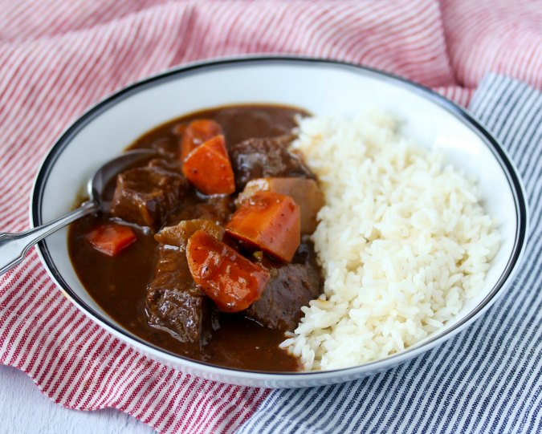

Japanese Beef Curry
Description
This recipe is similar to a beef curry recipe I saw on a Japanese TV show.
Ingredients
- 2 lbs beef stew meat, 1 1/2 inch cubed
- Salt and pepper to taste
- 2 tablespoons all purpose flour
- 2 tablespoons olive oil, divided
- 2 tablespoons butter, divided
- 3 white onions (2 1/2 lbs), halved and thinly sliced
- 2 cloves garlic, minced
- 1 inch by 1 inch piece of ginger, minced
- 1 tablespoon curry powder
- 2 tablespoons tomato paste
- 1 cup red wine
- 3 large carrots (2 1/2 lbs) peeled and sliced on an angle
- 1 large russet potato (12 ounces) peeled and cut into 1 1/2 inch chunks, placed in water to keep from browning
- 6 to 8 cups beef stock
- 2 bay leaves
- 1-4 ounce plus box of Japanese curry roux
- 2 tablespoons milk
- 1 tablespoon Worcestershire sauce
- 1/4 peeled tart apple, grated
- White rice for serving
Steps:
- Salt and pepper the beef cubes and toss with the flour.
- In a heavy Dutch oven, heat 1 tablespoon of oil and 1 tablespoon of butter on high heat. Cook the meat in batches on all sides until browned, 10 to 15 minutes. Transfer the beef to a plate.
- In the same pan, heat 1 tablespoon of the oil and 1 tablespoon of the butter on medium heat and add the onions and 1 teaspoon of salt. Stir to combine. Cook for at least 20 minutes and up to 40 minutes, depending on the level of caramelization you want.
- Add the garlic, ginger, curry powder, and tomato paste. Cook, stirring constantly, for two minutes.
- Add the beef back to the pan and pour in the wine. Cook for 5 minutes until most of the alcohol evaporates.
- Add the carrots, potatoes, beef stock, and bring the mixture to a boil. As it boils, skim the top to remove any "scum."
- Add the bay leaf and cover, leaving the lid very slightly ajar, and simmer for 20 minutes, skimming occasionally.
- Remove about 1 cup of the broth from the pot and dissolve the curry roux into it. Add the mixture back into the pot.
- Add the milk, Worcestershire sauce, and grated apple to the pot and cook on low, uncovered, until the mixture reaches the consistency that you like.
- Remove the bay leaves and serve over white rice.